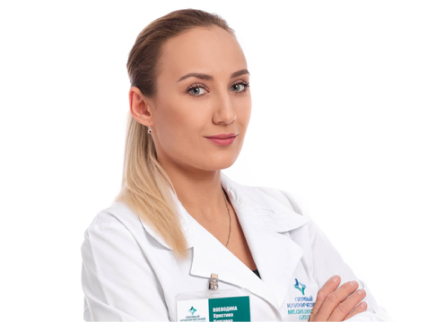

Показания к септопластике

Операция осуществляется эндоскопическим методом под накозом и относится к малотравматичным способам вмешательства. Методика эндоскопической септопластики значительно уменьшает дискомфорт и осложнения в восстановительном периоде.
Эндоскопический контроль на различных этапах оперативного вмешательства снижает количество отдаленных осложнений в послеоперационном периоде. Применение эндоскопической техники обеспечивает улучшенную визуализацию и возможность
ограниченного рассечения тканей.
Телеконсультация
Быстрый и лёгкий способ получить профессиональную консультацию врача. Вы можете общаться с врачом в онлайн – режиме в удобное время и вне зависимости от местонахождения.
Получить онлайн-консультацию
Сегодня септопластика под эндоскопическим контролем — современное направление ринохирургии. Вмешательство является малоинвазивным и ограничивается непосредственно анатомической областью деформации.
Искривление носовой перегородки — не всегда очевидная, но часто серьезная проблема. Она нередко может приводить к хроническим заболеваниям верхних дыхательных путей. Выпрямление искривленной перегородки носа может помочь избавиться
от причиняемых этим анатомическим дефектом неудобств. Септопластика считается щадящей методикой, так как позволяет сохранить хрящевой и костный остов.
В Первом клиническом медицинском центре операции производятся без наружных разрезов, эндоскопически и под контролем микроскопа. Для обеспечения комфорта пациентов после операции используются сетки для остановки и профилактики
кровотечения, тампонада носа не производится и носовое дыхание появляется сразу после операции. Госпитализация при выполнении эндоскопических вмешательств сокращается до 2-3 дней.
Стоимость услуг
*Сайт носит информационный характер и не является публичной офертой, определяемой положениями ч. 2 ст. 437 ГК РФ. Чтобы получить подробную информацию об услугах и ценах, обращайтесь в контактный центр.
Диагностика
«Золотым стандартом» диагностики патологических изменений внутренних структур полости носа являются рентгенологическое исследование костей и придаточных пазух носа, компьютерная томография придаточных пазух.
Не каждое искривление перегородки носа является причиной нарушения носового дыхания и требует хирургической коррекции, это определяют другие методы исследования дыхательной функции носа. Например, активная передняя риноманометрия позволяет
идентифицировать наличие или отсутствие признаков нарушения носового дыхания и оценить эффективность хирургического вмешательства на внутренних структурах полости носа. Осмотр полости носа и носоглотки при помощи ригидных эндоскопов
с различным углом зрения позволяет визуально оценить все особенности строения внутренних структур полости носа и носоглотки, определить объем и тактику хирургического лечения при необходимости
Реабилитация после септопластики
Продолжительность раннего послеоперационного периода после септопластики 3- 5 дней. Первые сутки после операции пациент находится в стационаре под наблюдением врaчей. При отсутствии ухудшения самочувствия пациент выписывается.
Общие противопоказания к септопластике
Наша команда
-
 Записаться на прием
Записаться на приемШиленков Кирилл Андреевич
Руководитель Центра, врач-оториноларинголог
-
Записаться на прием
Воеводина Христина Олеговна
Врач-оториноларинголог
-
Записаться на прием
Зимина Марина Геннадьевна
Врач-оториноларинголог
Еще больше комфорта